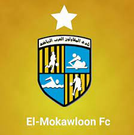

Biography
|  |
Early lifeBorn on June 15, 1992, in the humble town of Basyoun, Egypt, Mohamed Salah's journey toward becoming a football icon had begun. He was always interested in the idea of soccer, playing it on his PlayStation when he was young. At a young age, he idolized the Brazilian Ronaldo and French Zinedine Zidane. His talent and hard work didn't go unnoticed as he joined the El Mokalwoon team at the age of 14 in 2010. After his debut with older players, he became more recognized, and slowly built his way up to become a popular right winger at Liverpool. |
Family
|
Salah, once married to Maggi in 2013, had two girls, one named Mekka, and the other named Kayan. They all live together joyfully when Salah has free time and photos of them together on social media are posted all the time. He is very popular on social media, and even in Egypt because of his important position on the Egypt Soccer team of the country. He is so popular that an estimated million ballets became ruined during the presidential election of Egypt in 2018 because citizens made Salah as a choice and crossed off the two given choices . |